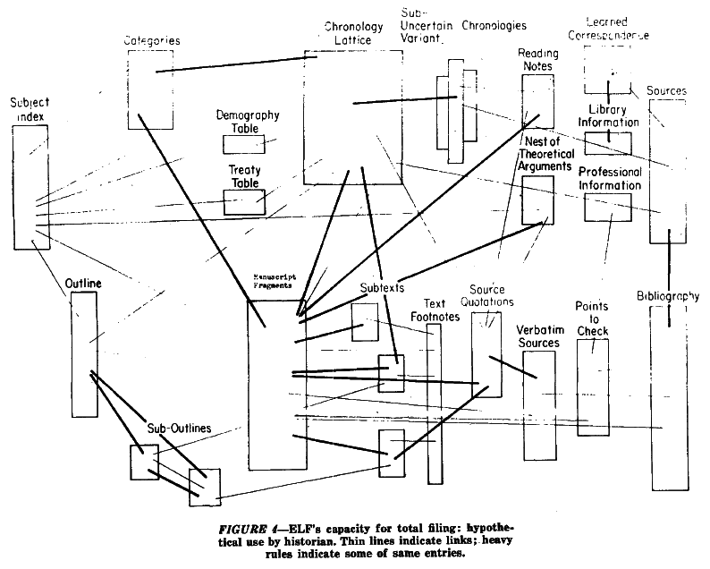
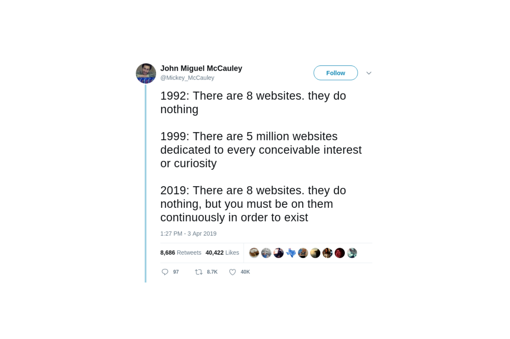

## What is the internet?
### [40 Maps that Explain the Internet](https://www.vox.com/a/internet-maps)
### HTTP Hypertext Transfer Protocol, to send and receive data
### URL Uniform Resource Locator, to uniquely identify data
### HTML HyperText Markup Language, the building blocks of webpages

### [The Kids Guide to the Internet](https://youtu.be/mfMrVKnGzwg?t=73)

#### Two myths currently limit our collective imagination: the myth that advertising is the only possible business model for online companies, and the myth that it’s too late to change the way platforms operate. On both points, we need to be a little more creative. Tim Berners-Lee, [The Web is Under Threat](https://webfoundation.org/2018/03/web-birthday-29/)
## New metaphors
#### What is needed is not new technology, but new metaphors: a metalanguage for describing the world that complex systems have wrought […] that simultaneously acknowledges and addresses the reality of a world in which people, politics, culture and technology are utterly enmeshed. James Bridle, [New Dark Age](https://www.versobooks.com/books/3002-new-dark-age)
### Global village ### Information superhighway ### The cloud ### Town square
### Surf ### Scroll ### Desktop ### File
## Exercise 0 Split into pairs. Interview each other about your first memory of the Internet. Record these memories, either by writing or drawing. (10 minutes)
## Exercise 1 What metaphor would you use to describe the internet today? (5 minutes)
## Exercise 2 Individually, draw how you imagine the Internet in your mind’s eye. You can draw as many versions as you like. (5 minutes)
## Exercise 3 Draw a map of the Internet. Label where your home is on the map. (10 minutes)
### Hyperlinks [What Shape is the Internet?](https://noahveltman.com/internet-shape/) [Critical Atlas of the Internet](http://internet-atlas.net/) [Web Design as Architecture](http://www--arc.com/) [Seeing Networks in New York City](http://seeingnetworks.in/nyc/) [Web Design: The First 100 Years](https://idlewords.com/talks/web_design_first_100_years.htm)